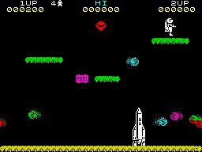

Jetpac


| Publisher: | Ultimate Play the Game |
| Price: | £5.50 / £14.95 |
| Year: | 1983 |
| Source: | CRASH, Issue 3 |
Many Spectrum games were released too early to have received a CRASH review, Jetpac is one such game, there is just this short snippet from issue 3 in a section titled 'Spectrum Guide'.

There's not much can be said about Ultimate that hasn't already been said. Graphics and presentation are of the highest standard In Jetpac you must get your spaceman to assemble a rocket and fuel it, steal as many gems as you can and avoid the irate aliens or kill them with the laser. When assembled the rocket takes off for another planet to plunder. Re-assemble the ship after five planets. Five levels of different aliens. Joystick: Kemptston. One or Two player games. continuous fire and movement in eight directions. Highly recommended.